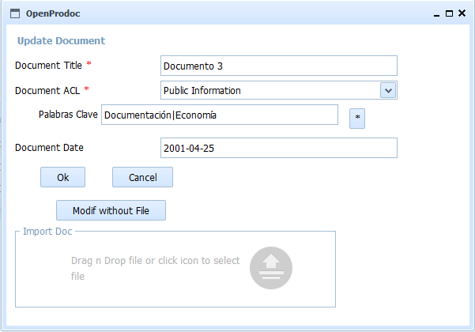

This form allows you to modify the document selected by entering all the common metadata and document type specific metadata. This form does not choose the document type, which can not be changed after inserting the document and allows you to modify security (ACL). In addition to the metadata common to all OPD documents, metadata specific to that type appear in an area below.

The user must have locked (Checkout) document for editing. The edition includes changes to the metadata and update the document. When editing is complete, you must unlock (Checkin) to publish the new values of the document and save a new version. Until then, only the user who locked will see the draft. If you wish to cancel everything done, just cancel the lock (Cancel Checkout), returning to the existing values at the time of checkout.
You can enter/modify at least the following information:
Required fields for each document type are highlighted. By placing the cursor or mouse over each field, it whill be displayed a tiptool with information on the field and the expected format. The fields of type date / time values must be valid and follow the expected format, otherwise the field is cleared and the value is rejected.
In the event of an error (lack of user permissions, communication error, incorrect date, etc.), the operation is canceled and the user will communicate the reason for the error.
See: CheckIn (Confirms changes in the locked document), CheckOut (Locks a Document for editing) and Cancel Checkout (Cancels changes in the document)